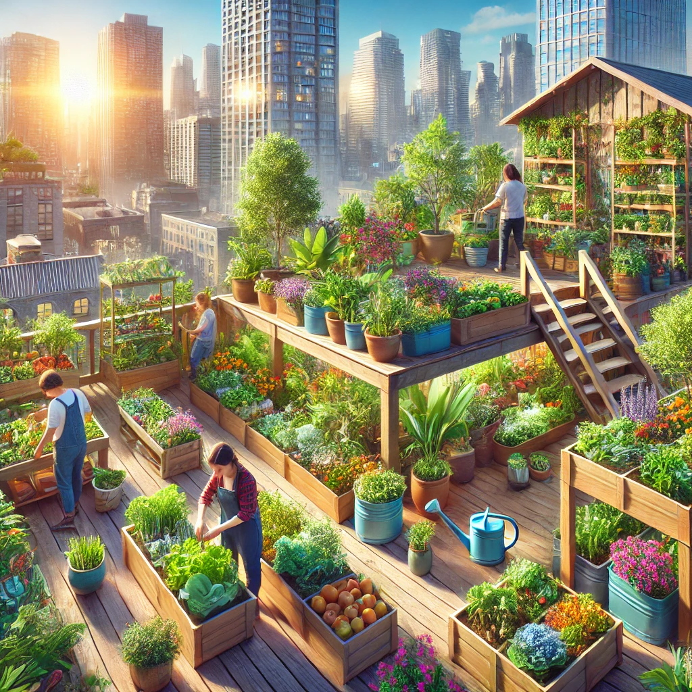
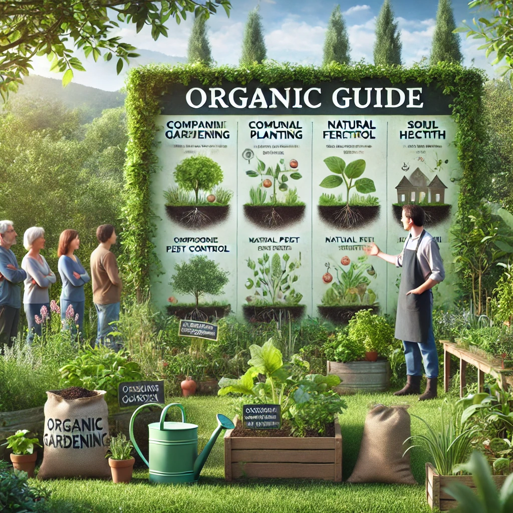

Conférence mondiale sur l'élagage
Découvrez les dernières techniques d'élagage partagées par des experts du monde entier lors de la conférence annuelle.
Lire plus

Guide complet sur le jardinage biologique
Apprenez comment transformer votre jardin en un espace respectueux de l'environnement avec des méthodes biologiques.
Lire plus

Le jardinage urbain en plein essor
Les espaces verts se multiplient en ville. Découvrez comment le jardinage urbain est en train de changer les paysages urbains.
Lire plus
Conseils pour une taille d'arbres réussie
Maîtrisez l'art de la taille d'arbres pour garder vos plantes en bonne santé et leur donner une forme parfaite.
Lire plus
La technologie au service du jardinage
Découvrez les dernières innovations technologiques qui facilitent l'entretien des jardins modernes.
Lire plus
Exposition florale internationale
Participez à l'un des plus grands salons floraux au monde et émerveillez-vous devant des créations florales spectaculaires.
Lire plus